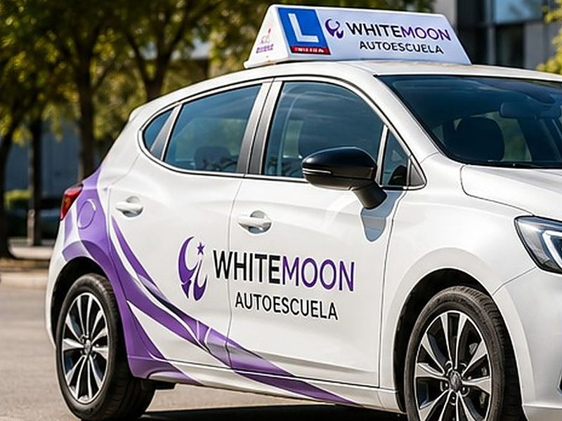

01El primer carnet
Permiso B, el de toda la vida
El carnet de coche, de la matrícula al examen. Abrimos tu expediente, te damos acceso a los tests, preparas la teórica con nosotros y organizamos las prácticas a tu ritmo.
- Apertura de expediente
- Plataforma de tests
- Teórica presencial
- Prácticas con doble mando
- Solicitud de examen DGT

Coche · Teórica · Prácticas